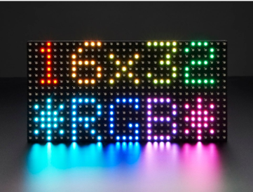
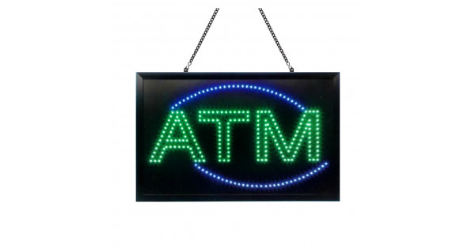
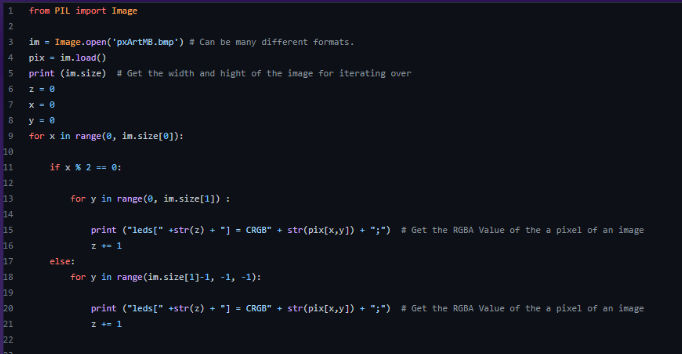

The concept was to create an LED board which displays any image that was fed into the arduino.

I were inspired by the the LED signs commonly seem on every day objects and wished to create and LED Sign that was able to dislay robot logos for our robotics team's upcoming competition, where I would be able to display the logo of diferent teams using a LED Sign when taking picture of their robot.

This was the python script that I had written which converts the 32x32 bit image into RGB values that fits the arduino LED format. It scans every single pixel of the bitmap and converts the pixel into RGB values. This script was able to also be compatiable with our two arduino set up due to some complications with running an single arduino.
I have experienced many ups and downs throughout this ISP project. I were able to wire up everything electronically pretty easily, and the python script for running the bitmap was not that complicated. However, due to memory limitation on the arduinos I were running, I weren't able to run all of the LEDs off one arudino, so I had to separate the LED sign into 2 sections and run both on separate arduinos.